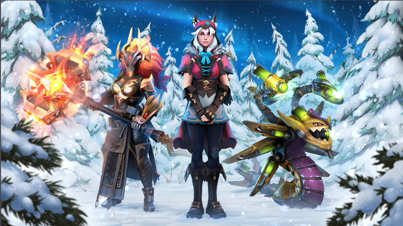
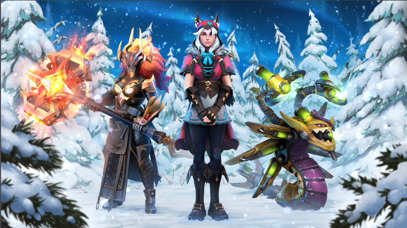

Оновлення гри
 Патч 7.36a: Valve випустила оновлення 7.36a, яке містить виправлення помилок та зміни в ігровому балансі. Читати далі
 Патч 7.36a: Valve випустила оновлення 7.36a, яке містить виправлення помилок та зміни в ігровому балансі. Читати далі
Після серії невдалих результатів на початок сезону 2024 Team Spirit перемогла Xtreme Gaming з рахунком 3-2 у фіналі PGL Wallachia Season 1. Однак на The International 2024 команда посіла 9-12 місце.
У вересні 2024 року відбулися значні зміни у складі: Yatoro та Mira залишили команду, а їх замінили гравці академії Alan "Satanic" Gallyamov та Aleksandr "Rue" Filin. Також Abdimalik "Malik" Sailau приєднався як тимчасова заміна Collapse до кінця року. Читати далі
У листопаді 2023 року Aurora Gaming підписала колишній склад Talon Esports, який вважався найсильнішим у Південно-Східній Азії. Склад включає: Nuengnara "23savage" Teeramahanon, Armel "Armel" Tabios, Anucha "Jabz" Jirawong, Worawit "Q" Mekchai та Chan "Oli" Chon Kien. У березні 2024 року Armel був переведений у запас, а його місце зайняв Artem "Lorenof" Melnik. Читати далі
Борьба з "смурфами": Valve забанила понад 65 тисяч акаунтів, пов'язаних зі "смурфінгом", а також гравців, які зловживали системою матчмейкінгу та порушували правила гри. Читати далі